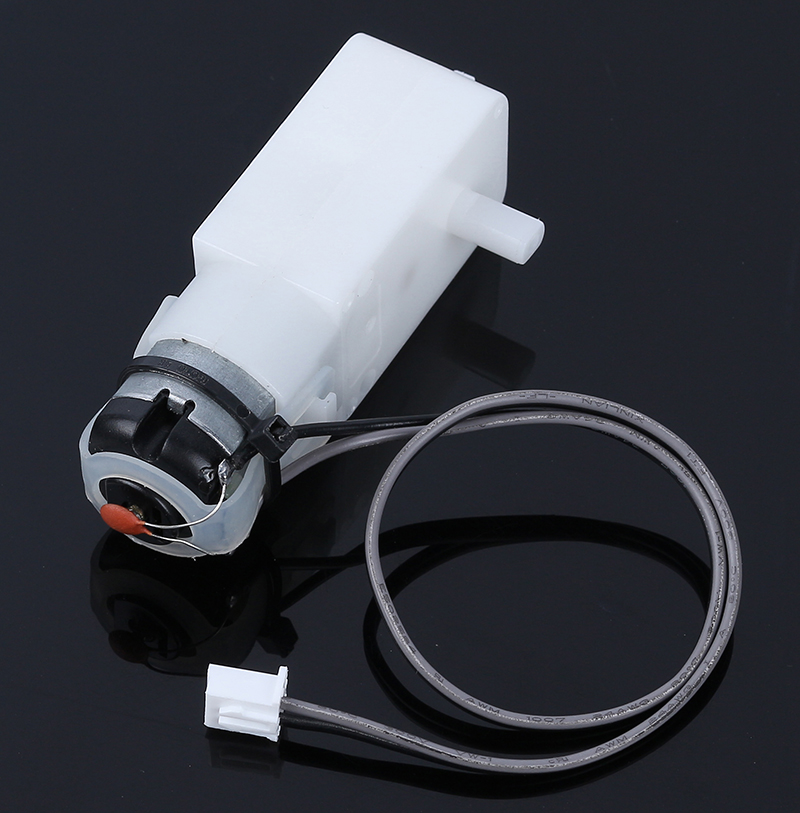
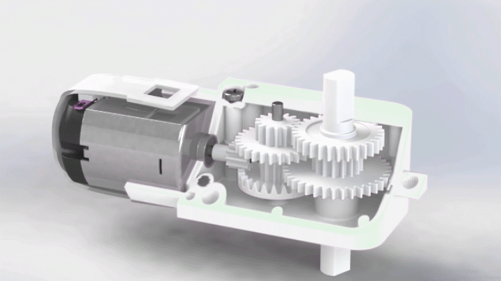
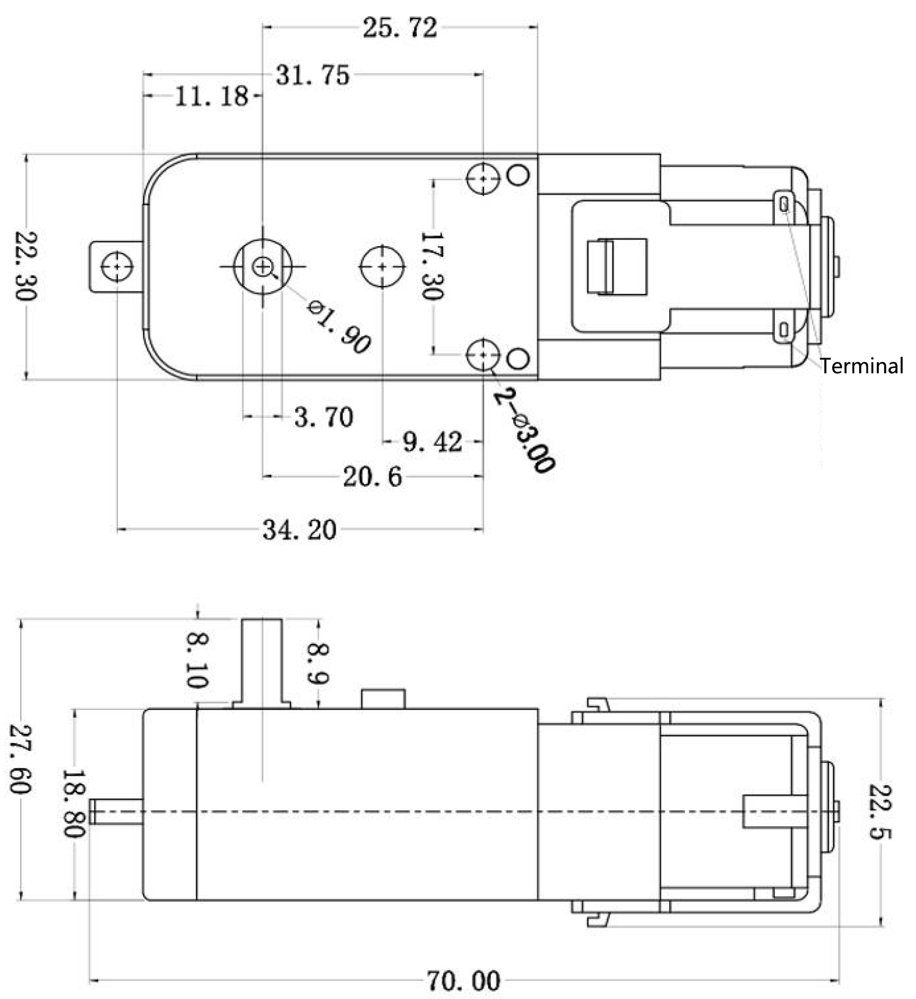

Note
Hello, welcome to the SunFounder Raspberry Pi & Arduino & ESP32 Enthusiasts Community on Facebook! Dive deeper into Raspberry Pi, Arduino, and ESP32 with fellow enthusiasts.
Why Join?
Expert Support: Solve post-sale issues and technical challenges with help from our community and team.
Learn & Share: Exchange tips and tutorials to enhance your skills.
Exclusive Previews: Get early access to new product announcements and sneak peeks.
Special Discounts: Enjoy exclusive discounts on our newest products.
Festive Promotions and Giveaways: Take part in giveaways and holiday promotions.
👉 Ready to explore and create with us? Click [here] and join today!
TT Motor
{kind=link}

This is a TT DC gear motor with a gear ratio of 1:120. It comes with two 250mm wires with an XH2.54-2P connector. It can be powered with 3VDC.
How Motors Work
A motor functions as the heart of a machine, transforming electrical energy into mechanical energy. This conversion brings to life various devices, from children’s toys and household appliances to large vehicles.
Here’s the process:
When electricity flows into a motor, it generates a magnetic field. This field interacts with other magnets within the motor, prompting it to spin. This spinning action, akin to a top whirling around, can then drive the movement of wheels, propellers, or other moving parts in a machine.

The TT Gear Motor is a specialized type of motor. It combines a standard motor with a series of gears, all housed within a durable plastic shell.
As the motor spins, the gears effectively transmit this rotational motion to the wheels of our rover. The integration of gears is pivotal, as it amplifies torque. This increased torque capacity enables the motor to maneuver larger and heavier loads, an essential capability in various applications.
{kind=link}

Features
Suggested Voltage 3V~4.5V DC
Number of Shafts: Single shaft
Gear Ratio: 1:120
No load current: 130mA
No load speed: 38rpm±8%rpm
Starting Voltage: 2V (max.) under no load
Output torque: 3V ≥1.2kgf.cm
Useful life: 70-120H
Direction of rotation: Bi-directions
Body Dimensions: 70 x 22.5 x 36.6mm
Wires: Gray and Black, 24AWG, 250mm
Connector: White, XH2.54-2P
Weight: 28.5g
Dimensional Drawing
Unit: mm
